Overview
Niramaya is a private inititiative handled by corporate professionals from different organisations, in collaboration with the state government. The project seeks to control coronavirus spread through its systematic montering system, that establishes a communication between the citizens and the local authorities.
The project is still in its beta phase collecting user test cases and constantly improving it's design. I joined the mission in March 25 2020, and am awaiting furthur response having reached my project goals.
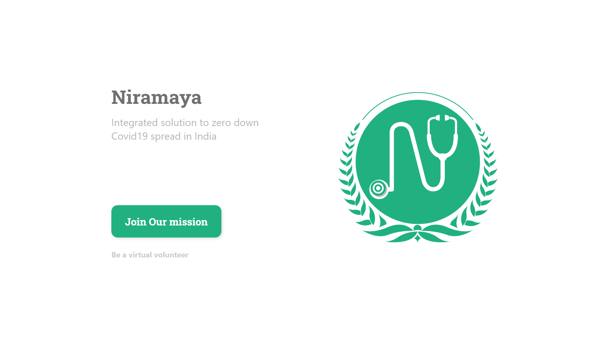
Project Conceptualization
Before I could work on any design, I had to make sure that I understood the problem statement, the purpose of the initiative, current status of the project, and my role in the team.
The project was devide into two major sections, the citizen's app, and the supervisor's app. I was handled the responsibilty of designing the supervisor's app. With an oncall discussion with the team lead, some research over the existing plan, and getting aquainted with fellow teammates I was all ready to start contributing.
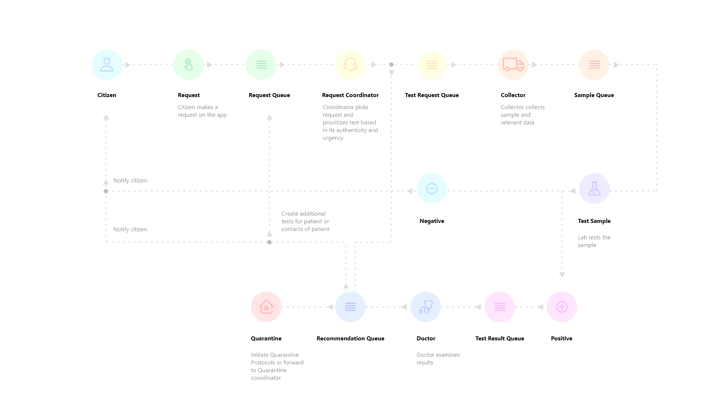
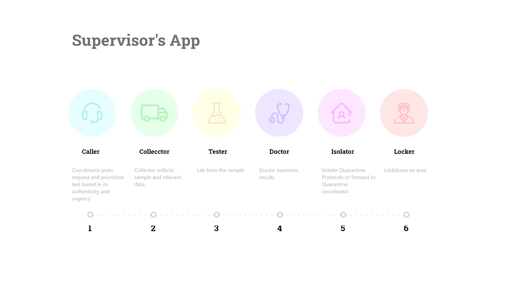
Content Analysis
The first step was to analyse the content I had to work with. It is indeed the content that ultimately decides what goes into a design, what functions it holds, and how these funtions communicate with each other. User data was managed using google sheets.
With thorough discussion the essential pieces of data were isolated and sorted into individual sections that catered to specific functions of the app. Here is an example of usere data pertaining to patient details which follows a certain hierarchy. The goal was simply to maintain and define this hierarchy as beautiful interfaces for the app.
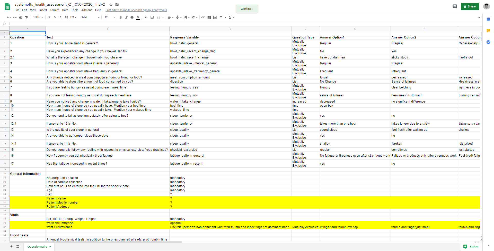
Sketching
The sketching phase was essentially a collective process of brainsotrming solutions, solution validation, defining user flows, optimization etc. This phase marked the foundation of the entire design process and so it was absolutely necessary that we decided upon the most optimal slolution.

Testing
Testing is an inevitable part of every stage of the designing process. My sole purpose to mention it, was to imply the idea that all stages were supported by user feedback, that helped improve the usability and functionality, and identify loop holes and bugs in the design.
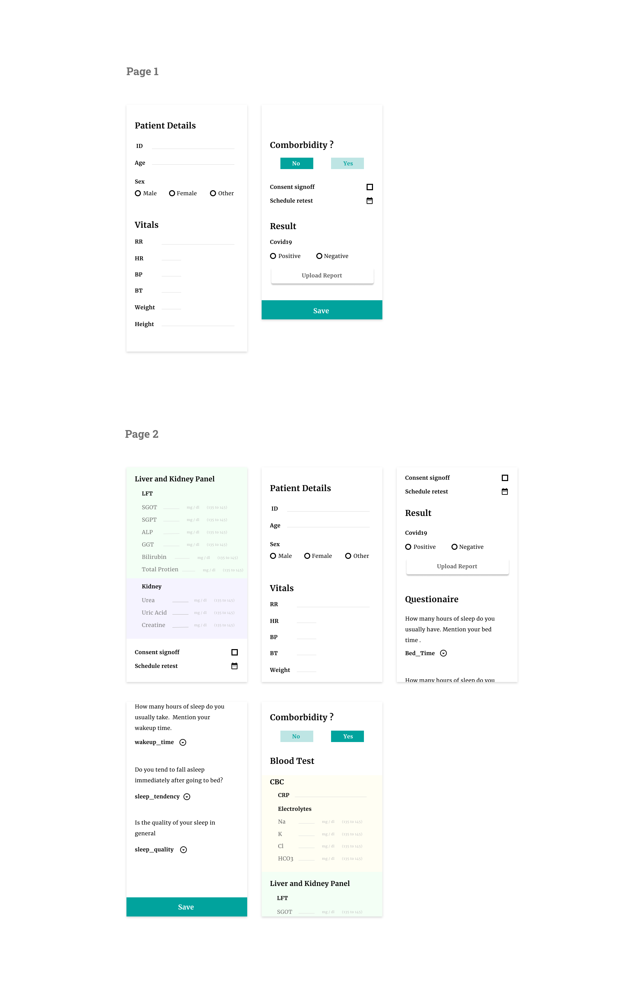
Wireframing
Wireframes were based of the ideas plotted in the sketching phase. It was mere implementing ideas on pencil and paper on digital medium. Wireframes gave a general outlook of the pages. So it was easy to understand the user flw

Design References
Since the project was already up and running when I joined as a member, I had to sync my designs with the exising format. Hence the basic entities like color and typeface were pretty much the same. Hence, the citizen's app layed the foundation for my design, and I built my ideas over them.
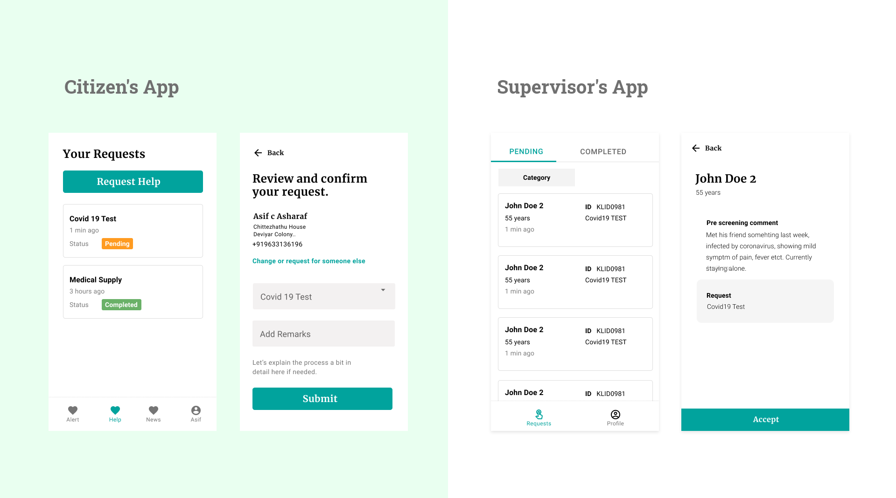
Typeface
Merriweather and Robot were the font-families for the entire app. With subtle style, weight and color variations, different character styles were formed as per the need.
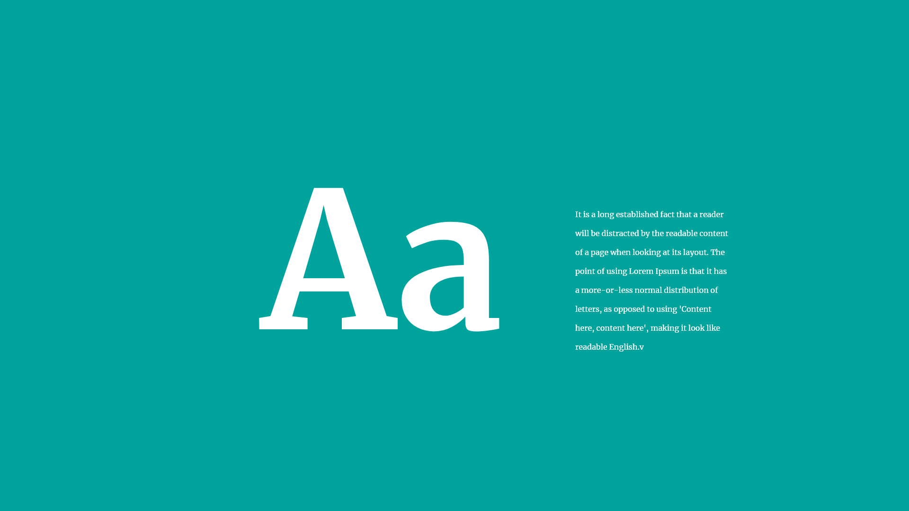
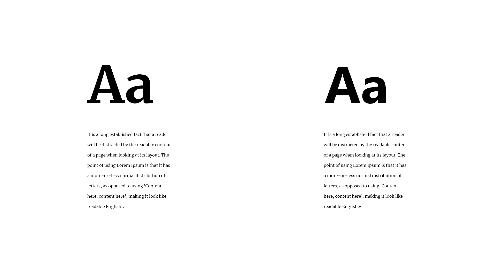
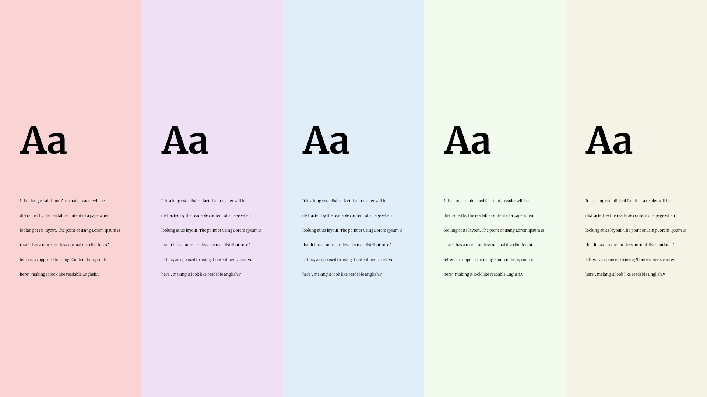
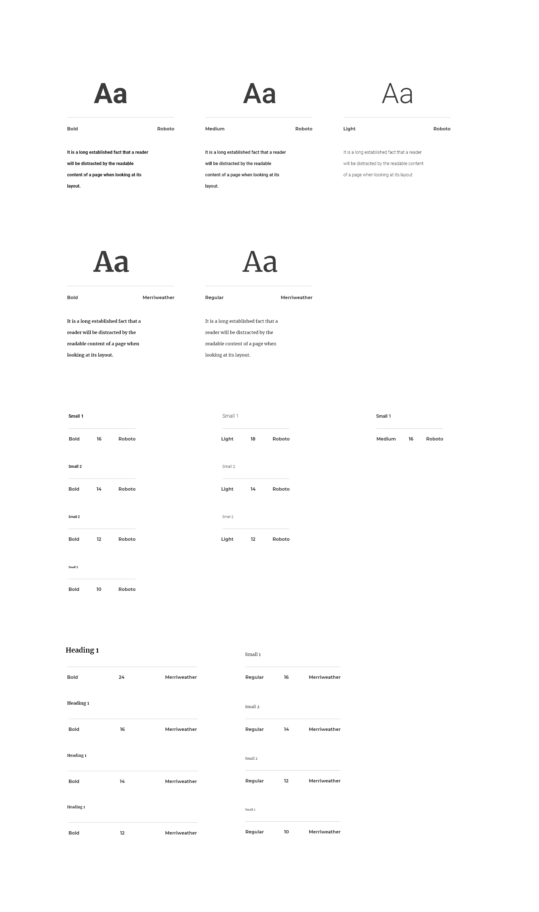
Color
Below is a quick glance at all the colors usedd in the design.
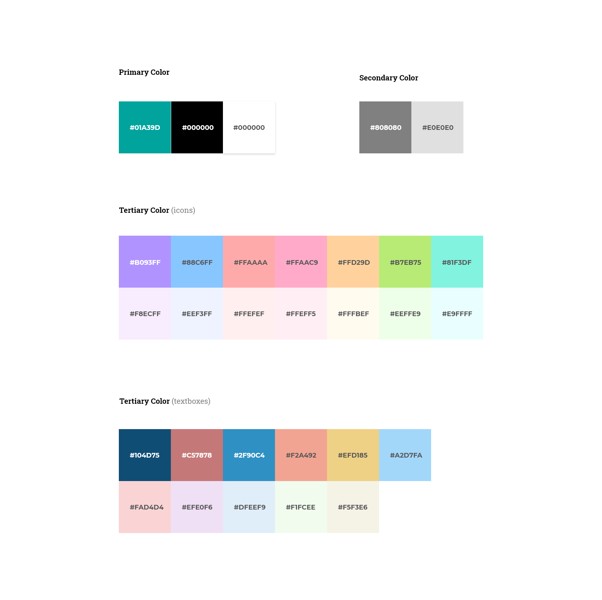
Components
Here's a collection of many but not all the components used in th UI.
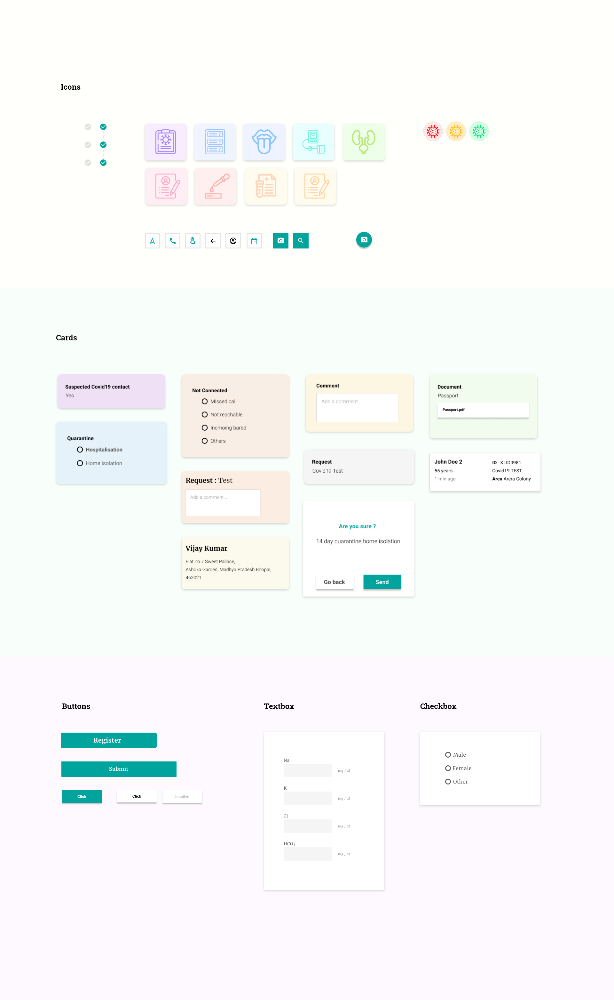
Creating Mockups
Now with the collected assets and wireframes, I produced high fidelity designs for developmet. The design process would always take place on hangouts with all the team members with a collective thought processs, suggesting ideas, alternatives to existing design, and concluding on a common notion before delevering them for development.
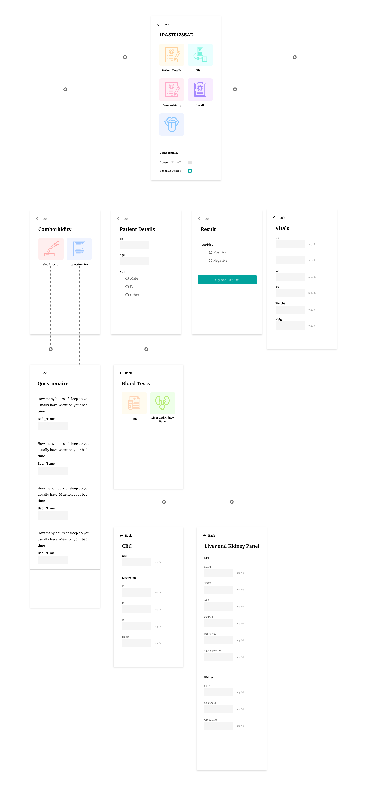
Prototyping and Development
The time was of essence in this project. With the pandameic crisis increasing at such a dangerous rate, the team had to be quick on delivering the app to the local official authorities. the development was handled by a different section. However, there would be frequent meetings to clarify doubts if any, and provide with assets like digital illustrations, icons etc. for development
Conclusion
The overall project was a great learning curve for me. As of now my responsibilities are on a hold, as I have reached my milestones, and am awaiting furthur response from the team. The project gave me great insight on how a team of professionals mutually communicate and work towards a common goal. It was during this phase that I learned new tools and technologies that boosted my design process and skills, and a project worth showcasing on my portfolio.
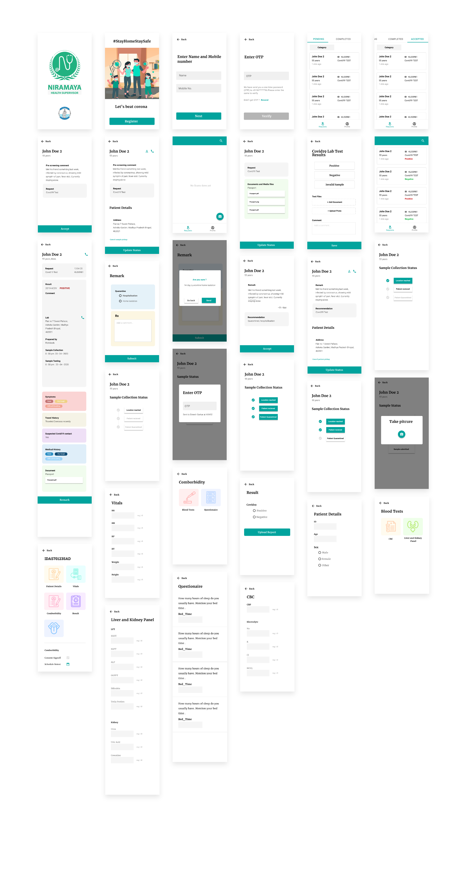